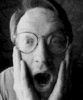
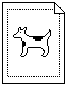
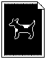

I'm going to tell you a few things that have never been put in print before about the
dogcow. If you don't know what or who the dogcow is, or you don't care for Apple
cultural minutiae, you should just flip past this column.
This is only part 1 of the story, to be followed by more in a future issue of develop .
We didn't want to hit you with it all at once, for fear of what the shock (or the
boredom) might do.
HOW IT ALL BEGAN
The dogcow was originally a character in the Cairo font that used to ship with the
Macintosh; it was designed by Susan Kare. I had always been interested in this critter
ever since I first saw it in the LaserWriter Page Setup Options dialog, sometime
during my stint in Apple's Developer Technical Support (DTS) group in 1987. To me
it showed perfection in human interface design. With one picture it was very easy to
explain concepts like an inverted image or larger print area that otherwise would be
nearly impossible to communicate.
Interest became an obsession when one day I was talking to Scott ("Zz") Zimmerman
about the dialog and suddenly thought, "Just what is that animal supposed to be,
anyway?" Since Zz was the Printing Guy in DTS (now in the Newton group), and my
favorite pastime was to bother him endlessly anyway, I started pressing him on
whether the animal was a dog or a cow.
In an act of desperation he said, "It's both, OK? It's called a 'dogcow.' Now will you get
out of my office?" The date was October 15, 1987, and I consider this to be the first
use of the term. It should be noted that since then a few people (including Ginger
herself) have told me that actually the phrase was coined by Ginger Jernigan (ex-DTS,
now ROM software) at a meeting of Apple's Print Shop sometime shortly before that,
which very well could be the case. Nevertheless it was Zz who pressed it into common
usage, and he certainly was the first person I ever heard use the term.
Zz's ploy to get me out of his office was futile, however, because then I stood around
and postulated that the dogcow's genes would have a radical effect on its behavior, and it
must not bark or moo, but rather utter a combination like "Boo-woo!" or "Moof!"
We both thought it was funny enough that we decided to press it into everyday usage,
and I started circulating the dogcow with "Moof!" on internal memos. The idea caught
on, and at the 1988 Worldwide Developers Conference we gave away dogcow buttons in
the debugging lab. Louella Pizzuti (ex-DTS, ex-develop editor, now citizen of the
world) came up with the great idea of making the background Mountain Dew green.
Response to the buttons was huge, and no one was smiling more than the DTS folks
when John Sculley wore one for his keynote speech. It was a major-league coup.
THE ORIGIN OF TECH NOTE #31
Then things started to spin out of control. Various groups internally started picking up
the dogcow logo and doing things that didn't seem, well, DTS-like. The final straw was
when the dogcow pin appeared in a Microsoft advertisement. Mark Johnson (ex-DTS,
now in Apple Europe) approached me and suggested that we throw down the gauntlet and
write a Technical Note on the subject. I balked out of nothing more than sheer laziness.
Some time passed and we were getting ready to go with the April 1989 batch of Tech
Notes when Mark approached me again, saying that he thought having an April Fool's
edition describing the dogcow would be perfect. I said yes but then stalled and stalled,
missing two deadlines, and I thought the Tech Note wasn't going to happen.
Mark marched in my office one day in March of 1989 at 11:30A. M. announcing that
Tech Notes were shipping at noon and implied that my manliness was in question if I
didn't get that Note in the batch. My macho instincts just couldn't allow that to happen,
so Tech Note #31, "The Dogcow," was written in literally 40 minutes in one pass. I'd
been thinking about it for quite some time, so I knew pretty much how it would go; I
just sat down and typed it out. Given more time I definitely would have churned out
something a bit more polished, and part of its quirkiness, I'm sure, is due to the time
pressure I was under.
One thing was certain: it had to be something original in concept. I've always had a deep
disdain for people who rip off comedic stuff. You know, the same people who used to
have to tell all their jokes with an English accent because of Monty Python are now
those who say "Not! " behind phrases. Once is funny, but after a while it gets really
old. I definitely wanted it out of the mainstream.
For numbering I wanted to use e , but Mark pointed out that there had been confusion
early on in the Tech Note numbering scheme and that a few numbers had been left out
for various reasons. He showed me some conversations from the net that went on and on
about Tech Note #31 and people's guesses as to why it was missing. (People were
really, really out there with their guessing; anyone who's a believer in conspiracy
theories would have enjoyed this blatant gibberish.) The number 31 had the right feel;
it would blend into the regular batch better thane , and I've always had a soft spot for
prime numbers, so we picked it.
Sports Illustrated had run a great fake story about a Zen baseball pitcher sometime
earlier and we borrowed the idea of having the words "April Fool's" spelled out within
the article from them -- in our case using the first letter of every line of the poem at
the closing. No one has ever mentioned this to me, so few people must have caught it.
There's a picture of the wrong way to draw the dogcow that several people thought was
a scanned image of Zz. Actually, completely independently of the Tech Note, I'd been
using a program called Mac-a-Mug, designed to make mug shots, and came across a set
of hair that looked frighteningly like Zz's. After fiddling around with the program a bit
I was able to come up with a good rendition of Zz's head, and I shoved it into the Tech
Note without his ever knowing about it. The expression (and color) of his face when he
learned about the picture is a memory I'll always cherish.
The Note also contains the expression "Aanal, Enacku Naiimadu, Kaanali!" People came
up with very unusual anagrams or unusual explanations for what it meant, the best
being that it was an obscure reference to a clip ofThe Day the Earth Stood Still that had
been cut from the film. But the truth is that it's phoneticized Tamil that was supplied
by Sriram Subramanian (Networking Guy, ex- DTS, ex-Taligent, now in Apple Japan)
meaning "But I can't see the dogcow!"
Ironically, there's also a mistake in that the "correct" way to draw the dogcow is
actually wrong. We ended up being so pressured for time in getting the Note out the
door that we just jammed it into a weird PostScript file that ended up mutating the
shape. Shortly after the release of that Note, Chris Derossi (ex-DTS, now at General
Magic) convinced me that a better solution was to have the correct way to draw the
dogcow be pixelated, to avoid these idiosyncracies in the future -- which is what's now
done.
NEXT TIME
There will be more history of the dogcow in a future issue ofdevelop . Have you ever
wondered if you have the entire set of dogcow pins? Is that dogcow T-shirt of your
cubemate's bootlegged? Is there any way things can get more meaningless? Some, but
not all, of these questions will be answered the next time we have a little extra space to
fill.
MARK ("THE RED") HARLAN started life in Rawlins, Wyoming, and has led about
exactly the kind of life you'd expect as a result. He spends most of his time at Apple
finding employees who were hired by Steve Jobs and asking them, "So how does it feel
knowing that the way you changed the world is by putting Windows on all PCs?" *
Our friend in the LaserWriter Page Setup Options dialog, normal and with
Invert Image and Larger Print Area:


Tech Note #31 is not on this issue's CD and hasn't been on the CD for quite
some time now; it's no longer available. It used to be hidden in the Technical Notes
Stack on the early versions of develop 's CD. It appeared on paper only once, as part of
the monthly mailing to Apple Partners and Associates in April of 1989. The continued
secrecy has a little bit to do with history and a lot to do with tradition. For more on
the distribution of the Tech Note, stay tuned for History of the Dogcow: Part 2.*
Thanks to Gary Robinson, whose letter asking for the story of the dogcow inspired
this column. *